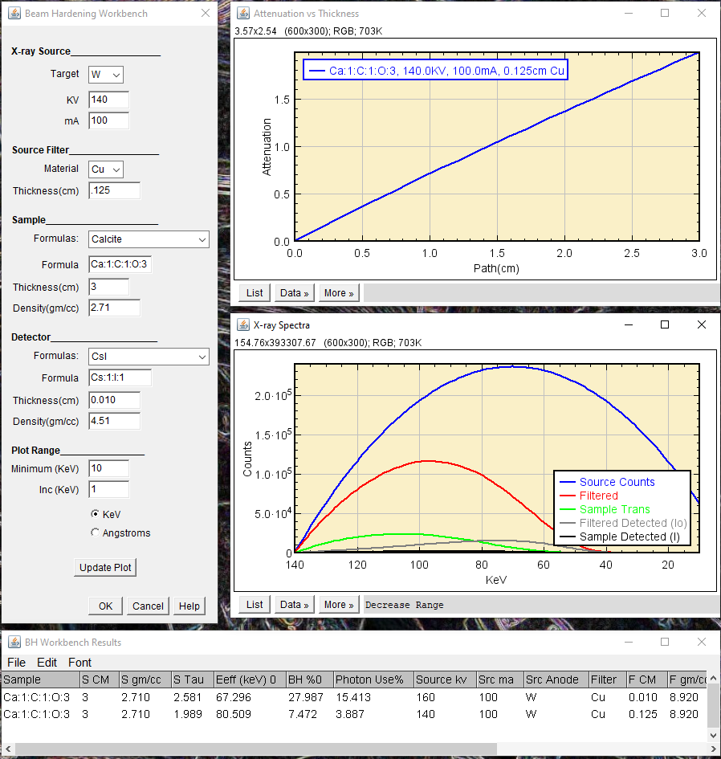

Beam hardening is the shifting of the broad spectrum of a conventional x-ray source toward higher average (hard) energies as it passes through a material. Lower energy X-rays are preferentially attenuated leaving the higher energy, more penetrating X-rays for detection. It is mostly evident in the photoelectric energy range where the attenuation of materials changes rapidly with photon energy.
Why is Beam Hardening Important
Beam Hardening results in an over-estimate of attenuation in thinner portions of the sample. It produces the well-known cupping and streak artifacts in tomographic images.
What can be done to reduce Beam Hardening
There are primarily two ways to minimize beam hardening artifacts.
The first is to pre-harden the X-ray beam before it reaches the sample. This is often done by using a filter, usually a metal foil, located at the X-ray source. Occasionally the accelerating potential of the X-ray source is increased to offset the decreased intensity caused by the filter absorbance.
The second is to apply a correction to the observed attenuations so that a plot of attenuation vs sample thickness becomes linear. The linearization function is usually a polynomial that is determined either by simply observing the quality of the corrected images😖 or by careful calibration😁. Linearization is most successful when the sample is relatively homogeneous, when all rays passing through the sample see about the same average composition. We will discuss linearization on a separate page. When samples are not relatively homogeneous, more advanced methods beyond the current scope of my plugins are required.
The ImageJ plugin
The Beam Hardening Workbench helps to fine-tune the pre-hardening technique. It helps selection of the operating conditions that will give good contrast and accurate attenuation measurements for your sample. The plugin is built upon the Mu Mass Calculator library. It provides an interactive way to minimize the severity of beam hardening.
Schematic of a typical radiography/tomography experimental setup
The above figure shows a schematic of a simple radiography or CT scanner. The arrow colors correspond to the plot colors(below), the arrow widths indicate spectral width and the length indicates intensity.
The User Interface
ImageJ Plugin Beam Hardening Workbench, Initial
Step 1, Initial setup
Replace the current values in the dialog(left) with your sample's average composition and your system's configuration. The dialog values should be clear to persons familiar with conventional X-ray sources with the exception of the Formula which is entered as atom1:count1:atom2:count2... as required by MuMassCalculator.
The detector is modeled by counting photons absorbed by a screen of a the entered composition, thickness, and density. Real detectors vary considerably in design, construction and response. Click the Update Plot to create/update the three results windows(right).
The top plot shows the relationship between sample thickness and attenuation. It should look like a nearly straight line if the incident photon beam is approximately monochromatic.
The middle plot shows intensity vs X-ray energy at five sampling points along the beam path.
The window at the bottom shows the results for each trial configuration.
Step 2, Evaluation
In the BH Workbench Results window:
The sample attenuation S Tau, the product of μρx, is 2.58, it should be ≅ 2.
The beam hardening BH% is 28%, ideally it should be <10%.
The Photon Use is 15.4%.
Moving down stream and looking at the X-ray Spectra we see:
The source emits a broad spectrum of photons from just below 160 KeV, peaking at 80KeV and falling off at lower energies(blue curve).
The filter reduces the low energies but still transmits a large fraction of photons below 50 KeV(red curve).
The detected filter spectrum is heavily low-energy weighted due to poor detector performance at high energies(gray curve).
The detected filter spectrum contains features from the detector's Cesium and Iodine absorbance edge jumps(gray curve).
The sample does not transmit any of the filtered photons less than 50KeV(green curve).
The detected sample spectrum has no photons less than 50KeV(black curve)
Conclusion: The filter pre-hardening is not sufficient. When we measure the incident intensity without the sample in the beam Io we are counting many low energy photons that will be completely absorbed by the thicker portions of the specimen but will be transmitted by the thinner regions leading to significant beam hardening artifacts. This is also seen in the top Attenuation vs Thickness curve.
Step 3, Optimization
Add filter thickness and observe the changes in the curves. Removing the low energy X-rays will:
Raise the Eeff, the effective energy*
Lower the sample attenuation. If reduced too far you may want to lower the Source KV
Reduce the beam hardening.
Reduce the photon use, increasing exposure time.
Achieving a proper balance between photon use and acceptable beam hardening often depends on the sample composition and structure, the effectiveness of post-acquisition beam hardening corrections, and the information to be obtained from the image.

ImageJ Plugin Beam Hardening Workbench, Final
In this example we accepted some beam hardening in exchange for a shorter exposure time.**
*Effective photon energy - The effective energy of an x-ray spectrum is the energy of a mono-energetic beam of photons that has the same penetrating ability as the spectrum of photons.
**My Excel Beam Hardening Add-in uses the Solver to maximize Photon Use% while constraining sample tau and beam hardening.
Special Note: The simplified detector in this example is cesium iodide and is relatively thin for high energy applications. The detector model and is noiseless for photons absorbed by the scintillator. Real detectors vary considerably in design, construction and response. Be sure to configure the detector to match your system before proceeding.